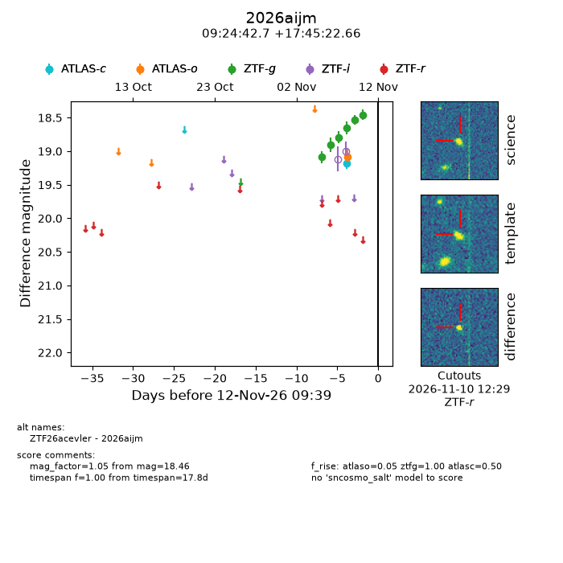
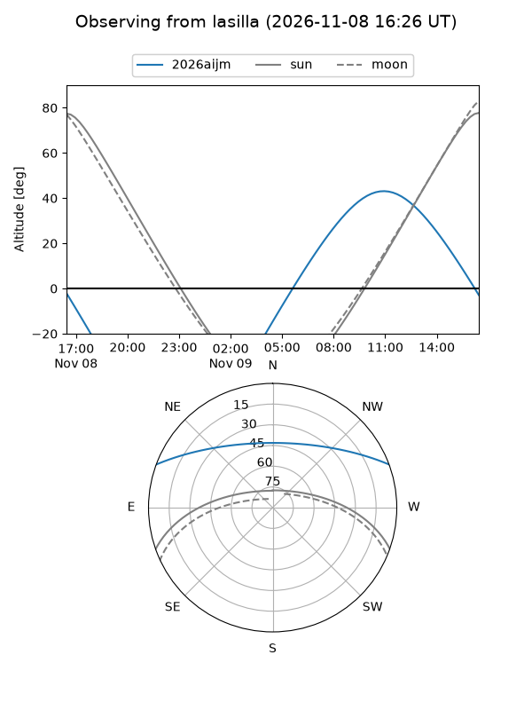
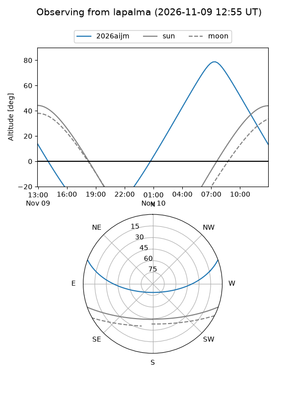
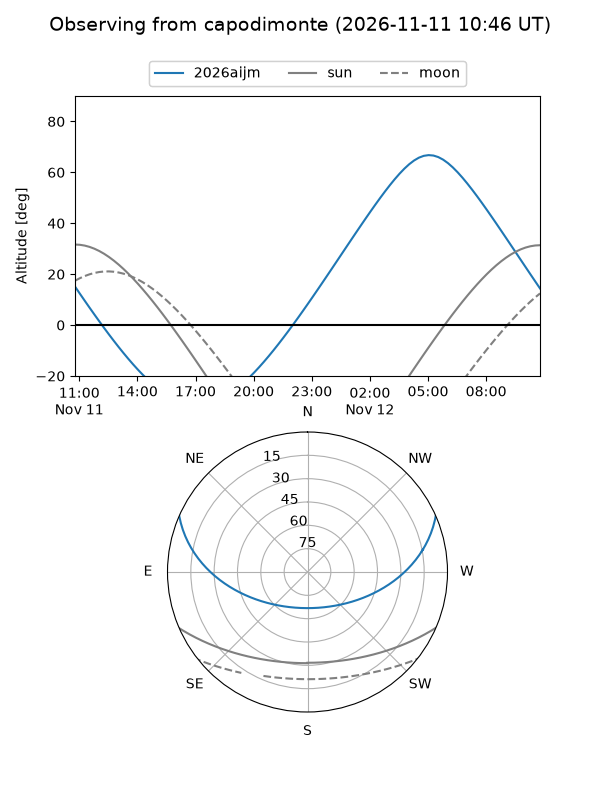
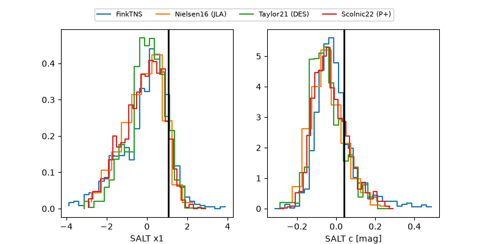

2026aijm
Target 2026aijm at 2026-11-12 09:45
Aliases and brokers:
FINK-ZTF: ztf.fink-portal.org/ZTF26acevler
Lasair-ZTF: lasair-ztf.lsst.ac.uk/objects/ZTF26acevler
ALeRCE-ZTF: alerce.online/object/ZTF26acevler
YSE-PZ: ziggy.ucolick.org/yse/transient_detail/2026aijm
TNS name: wis-tns.org/object/2026aijm
Direct TNS query: direct search
alt names
ZTF26acevler (ztf,fink_ztf)
2026aijm (tns,yse)
Coordinates:
equatorial (ra, dec) = 141.1780,+17.75629
equatorial (HMS+DMS) = 09:24:42.72,+17:45:22.66
galactic (l, b) = (212.7661,+41.65127)
Flags:
peak dt:
Photometry:
last atlasc=19.18, atlaso=19.09, ztfg=18.46
1 atlasc, 2 atlaso, 6 ztfg detections
Lightcurve

Visibility



Additional plots
